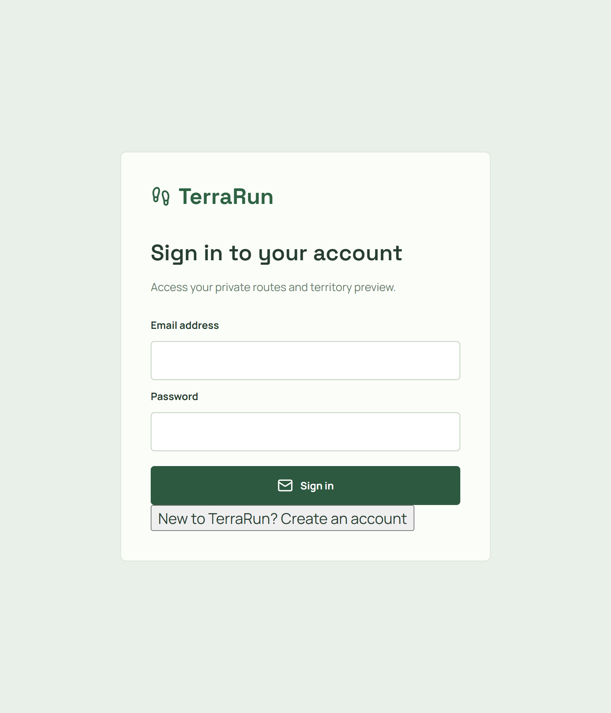
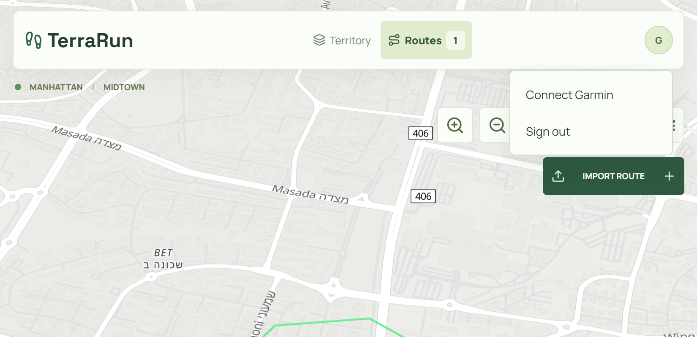
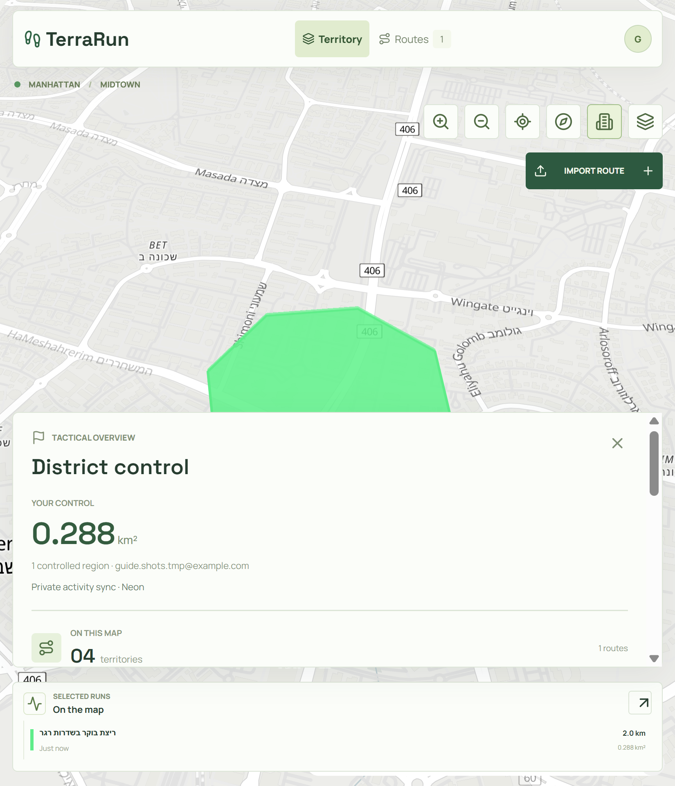
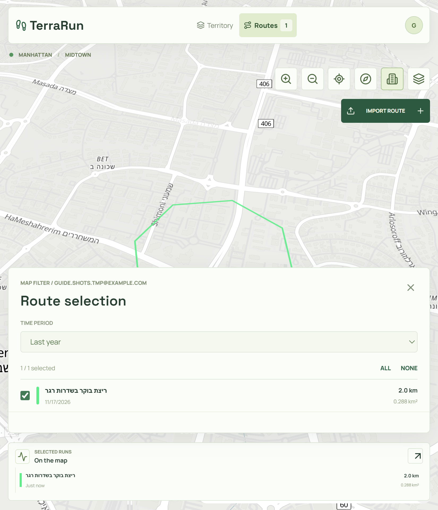

🏃♂️ TerraRun — כובשים את הרחובות
משחק לרצים: כל ריצה שלכם הופכת לשטח כבוש על מפת העיר. רצים לולאה — השטח שבפנים שלכם. מפסיקים לרוץ — מישהו אחר ייקח לכם אותו.
1 נרשמים
נכנסים לאתר, לוחצים על Create an account, בוחרים אימייל וסיסמה — וזהו. בלי אימותים מסובכים.

ההרשמה לוקחת חצי דקה. הריצות שלכם פרטיות — אף אחד לא רואה את המסלולים שלכם.
2 מעלים ריצה
שתי דרכים:
- 📂 קובץ: מייצאים ריצה מהשעון או מהאפליקציה (GPX או GeoJSON) ולוחצים IMPORT ROUTE.
- ⌚ Garmin: בתפריט החשבון (העיגול למעלה מימין) לוחצים Connect Garmin — ומאז כל ריצה חדשה נכנסת לבד, בלי להרים אצבע.

חיבור Garmin הוא חד-פעמי. אחרי זה — מסנכרנים ריצה בשעון והיא מופיעה במשחק.
3 כובשים שטח
הקסם: אם המסלול שלכם סוגר לולאה (מסיימים קרוב לנקודת ההתחלה, או חוצים את המסלול של עצמכם) — כל השטח שבפנים נצבע בצבע שלכם:

ריצה של 2 ק"מ בשכונה = 0.288 קמ"ר כבושים. רואים בדיוק כמה שטח יש לכם.
4 נלחמים על השכונה
כאן מתחיל המשחק האמיתי:
- 💪 כל ריצה נוספת על השטח שלכם מחזקת אותו (+1 עוצמה).
- ⚔️ ריצה של יריב על השטח שלכם מחלישה אותו (-1 עוצמה). בעוצמה 0 השטח הופך ניטרלי, ובריצה הבאה — עובר אליו.
- 👻 היריבים אנונימיים לגמרי: רואים רק צבע ושם קוד כמו Rival 7F4B — אף פעם לא שם, אימייל או מסלול.
- 🚫 אנטי-צ'יטינג: ריצה מהירה מדי (מעל 35 קמ"ש לאורך זמן — כלומר רכב) לא כובשת שטח.
💡 טיפ: רוצים אימפריה? תרוצו כל שבוע את אותה לולאה — העוצמה מצטברת וקשה לגנוב לכם אותה.
5 עוקבים אחרי המסלולים
בלשונית Routes רואים את כל הריצות, מסננים לפי תקופה ובוחרים מה להציג על המפה:

🏁 מתחילים לשחק — TerraRun